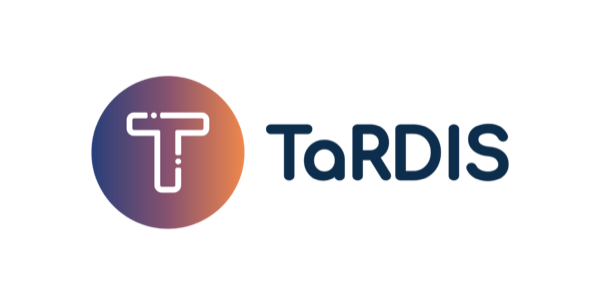

Research
Interests
- Consistency and safety of replicated data — principled techniques for highly available systems, from replicated data types (CRDTs) to invariant preservation and coordination avoidance in geo-replicated, edge, and local-first settings.
- Verification of concurrent and distributed systems — proof tools, model checking, runtime monitoring, and automated testing that help programmers establish the correctness of distributed applications.
- Formal models of concurrency — process calculi and semantics for reasoning about distributed computations, from compensating long-running transactions to reversible computation and causality in actor-based systems.
- Language-based techniques for low-code software development — type-safe templates, program synthesis, and testing for low-code platforms.
Current projects
-

Trustworthy and Resilient Decentralised Intelligence for Edge Systems — correct and efficient development of applications for swarms and decentralized systems (Horizon Europe grant 101093006). EU Horizon Europe · Coordinator · 2023–2026
Past projects
- PRECISE A correct by design methodology for available cloud applications FCT/MCTES/PT (PTDC/CCI-INF/32081/2017) · 2018–2022 · PI
- GOLEM Automated programming to revolutionize app development, led by OutSystems CMU|Portugal (LISBOA-01-0247-FEDER-045917) · 2020–2023
- LightKone Lightweight computation for networks at the edge H2020/EU (grant 732505)· 2017–2019
- Reversible Computation Extending horizons of computing COST Action IC1405/EU · 2015–2019
- Clay An Environment for Live Construction of Trustworthy Software FCT/MCTES/PT (PTDC/EEI-CTP/4293/2014) · 2016–2019
- SyncFree Large-scale computation without synchronisation FP7/EU (grant 609551) · 2013–2016
- Certified Interfaces Certified interfaces for integrity and security in extensible Web-based applications CMU|Portugal (CMU-PT/NGN/0044/2008) · 2009-2012
- StreamLine Thread-Safety by Typing for Mainstream Concurrent Object-Oriented Programming FCT/MCTES/PT (PTDC/EIA-CCO/104583/2008) · 2010-2012
-
IP Sensoria
Software Engineering for Service-Oriented Overlay Computers
FP6/EU (016004) · 2005–2010 -
IP MATISSE
Methodologies and technologies for industrial strength systems engineering
FP5/EU (IST-1999-11435) · 2000-2003 - ABCD Automated Validation of Business Critical Systems with Component Based Designs UK EPSRC (GR/M91013) · 2000-2003
-
HICBE
High-Integrity Component-Based Engineering for Enterprise Systems
IBM Hursley UK · 2000-2003
Scientific service
- ESOP 2027 — European Symposium on Programming (Program Committee)
- FM 2026 — Symposium on Formal Methods (Program Committee)
- DARE 2023, DARE 2024, DARE 2025, DARE 2026 — Summer School on Distributed and Replicated Environments (Organising Committee)
- ECOOP 2025 — European Conference on Object-Oriented Programming (Program Committee)
- PaPoC 2025, PaPoC 2023, PaPoC 2020, PaPoC 2019 — Principles and Practice of Consistency for Distributed Data (Program Committee)
- ECOOP 2024 — European Conference on Object-Oriented Programming (Program Committee)
- FORTE 2024 — Conference on Formal Techniques for Distributed Objects, Components, and Systems (Program Committee)
- ICE 2024 — Interaction and Concurrency Experience Workshop (Program Committee)
- POPL 2024 — Symposium on Principles of Programming Languages (Program Committee)
- INForum 2024 — Simpósio de Informática (General Co-chair)
- ICE 2023 — Techniques for safe and highly available cloud applications (Invited Talk)
- SEFM 2023 — Conference on Software Engineering and Formal Methods (Program Committee Co-chair)
- TACAS 2021 — Tools and Algorithms for the Construction and Analysis of Systems (Program Committee)
- INForum 2020 — Simpósio de Informática (Chair SOFT-PT Track)
- Dagstuhl Seminar 19442 — Programming Languages for Distributed Systems and Distributed Data Management (Co-organizer)
- FM 2019 — Symposium on Formal Methods (Program Committee)
- PaPoC 2019 — Techniques for safe and highly available cloud applications (Invited Talk)
- RC 2019, RC 2018 — Conference on Reversible Computation (Program Committee)
- ATVA 2017 — Symposium on Automated Technology for Verification and Analysis (Invited Talk)
- FORTE 2017 — Conference on Formal Techniques for Distributed Objects, Components, and Systems (Program Committee)
- MFPS 2017 — Conference on the Mathematical Foundations of Programming Semantics (Program Committee)
- PMLDC 2017, PMLDC 2016 — Programming Models and Languages for Distributed Computing (Program Committee)